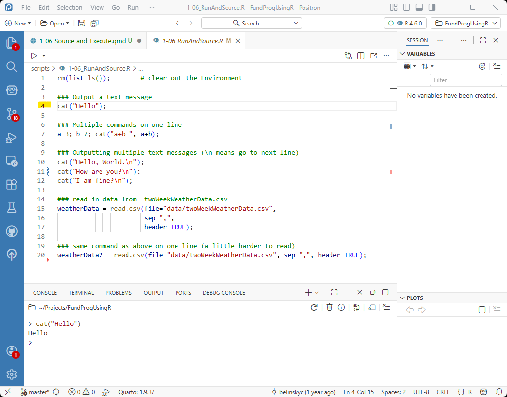
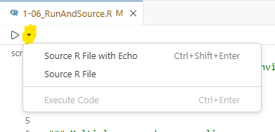
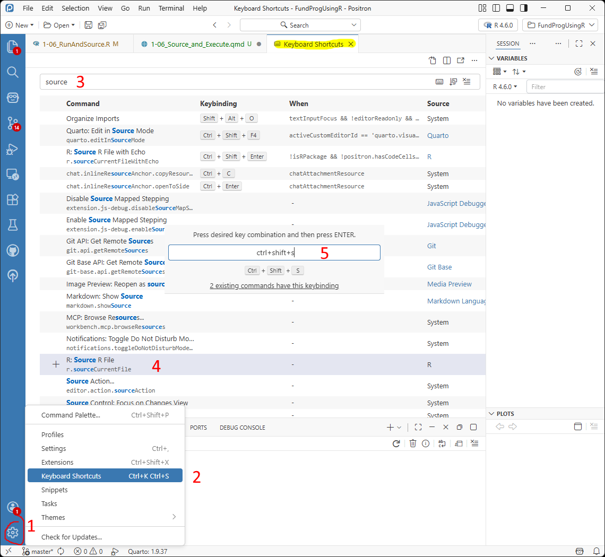
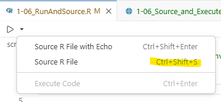
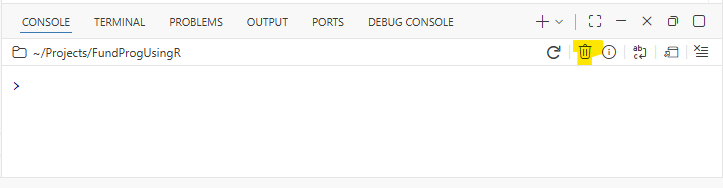
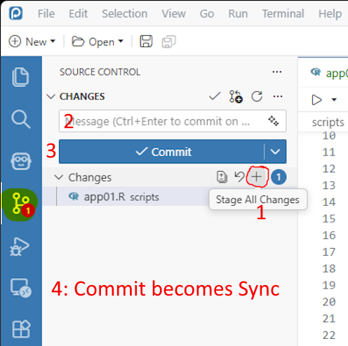
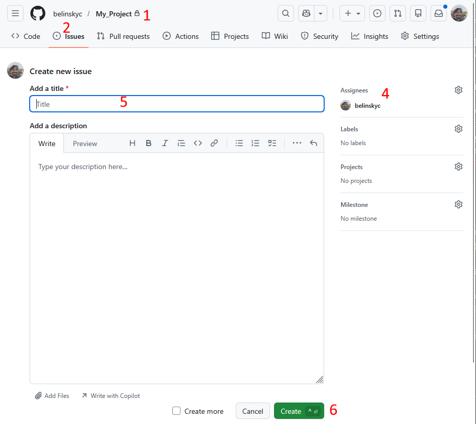

1-06: Source and Execute
0.1 Changes…
1 Purpose
look at some of the features of R and Positron
explore uses for the Console
run script using Execute and Source
1.1 Files for the lesson
The script for the lesson is here
The data for this lesson is here
We are using the same script for this and the next lesson. In this lesson the focus is on the different ways to execute your code and other features in Positron. In the next lesson the focus will be more on the content of the lesson’s script.
If you have any questions about the material in this lesson, feel free to email them to the instructor, Charlie Belinsky, at belinsky@msu.edu.
2 Output to console
In this and the next lesson we are going to make extensive use of the Console tab, which can be used to execute code and as output for your script file. Like the Variables tab, it is difficult to maintain lesson images so I will use text instead.
For example (the details will be explained later):
open the script for this lesson in your Project Folder
click on line 4 (i.e., put the cursor on line 4)
click Control-Enter (Command-Enter on Mac) to execute line 4
The Positron window looks like this:

Instead of displaying the Positron image, I will display the output to the Console tab like this:
> cat("Hello");
Hello
>3 Sourcing and echoing
The right-arrow button used to execute your script in Positron has a small down arrow next to it. That arrow presents three common options for executing commands in your script:
Source R File with Echo: Runs your whole script (Source) and outputs the code to Console (echo)
- This is the same as clicking the right arrow
Source R File: Runs your whole script without outputting code to Console
Execute Code: Runs a single command, line, or highlighted code. It is grayed out when no code is selected

3.1 Echo vs no echo
When you click the right arrow, it always does a Source R File with Echo (i.e., the first option). This is what appears in the Console (note: the first line is the command sent when you click the Source button):
> source("c:/Users/Charlie/Projects/FundProgUsingR/scripts/1-06_RunAndSource.R", «echo = TRUE»)
> rm(list=ls()); # clear out the Environment
> ### Output a text message
> cat("Hello");
Hello
> ### Multiple commands on one line
> a=3; b=7; cat("a+b=", a+b);
a+b= 10
> ### Outputting multiple text messages (\n means go to next line)
> cat("Hello, World.\n");
Hello, World.
> cat("How are you?\n");
How are you?
> cat("I am fine?\n");
I am fine?
> ### read in data from twoWeekWeatherData.csv
> weatherData = read.csv(file="data/twoWeekWeatherData.csv",
+ sep=",",
+ .... [TRUNCATED]
> ### same command as above on one line (a little harder to read)
> weatherData2 = read.csv(file="data/twoWeekWeatherData.csv", sep=",", header=TRUE);
>If you choose the second option, Source R File (without echo), this is what you see in the Console:
> source("c:/Users/Charlie/Projects/FundProgUsingR/scripts/1-06_RunAndSource.R")
Helloa+b= 10Hello, World.
How are you?
I am fine?
>When you do not use echo, the only output in Console is the command to run your script (first line) and anything your script explicitly sends to Console (lines 2-4, which we cover later). When you use echo, all of the code (including comments) outputs to Console.
3.2 Source without echo keyboard shortcut
Most programmers prefer to Source without echoing (the default in RStudio) because the Console is much less cluttered. To make this easier, we will create a keyboard shortcut to Source R File (without echo):
- Click the Setting wheel in the bottom-left corner
- Choose Keyboard Shortcuts (a Keyboard Shortcuts tab will open)
- In the text box on top type
source - Double-click R: Source R File
- Put in the keyboard shortcut you want and press enter. I chose ctrl+shift+s because this is the shortcut in RStudio. This will overwrite Positron’s Save as… shortcut so you might want to choose something else.

After you do this, you will be able to use ctrl+shift+s (or whatever keyboard combo you chose) to Source without echo. You will also see the new shortcut when you click on the down arrow:

4 Entering commands directly into Console
You can directly type commands in the Console . For instance, you can type the code to Source your script without echo (just the highlighted line and press enter):
> «source("scripts/1-06_RunAndSource.R")»
Helloa+b= 10Hello, World.
How are you?
I am fine?
>note: this file path is relative to the Project Folder (i.e., Working Directory) and assumes you put the lesson script in the scripts folder and did not change its name.
You can type in a simple output command in Console:
> «cat("Hello")»
Hello
>A common issue for people using the Console is that they will not complete commands. For example, type cat("He in the Console and press enter:
> «cat("He»
+A ( + ) appears on the next line. The ( + ) means that R sees an unfinished command and is prompting you to finish it. You can finish it by typing llo") in the Console. The result will still be a bit off:
> cat("He
+«llo")»
He
llo
>4.1 Quick view of variables
Another use for the Console is to quickly view some value. If you want to see the highTemp column in weatherData you can type in the Console (this only work if you have already Sourced the script):
> «weatherData$highTemp»
[1] 57 50 54 40 39 58 60 53 55 44 39 54 61 75
>Note: after you type $ in weatherData$, Positron will start offering you column suggestions – a very convenient feature when you have large dataframes.
5 Execute vs. Source
Source is used to execute the entire script (i.e., every command) while the Execute Code command (Control/Command-Enter) is used to selectively run commands. Execute is a great tool for debugging and testing your code and we are going to almost exclusively use Execute for the next two lessons.
You can also Execute code by clicking the drop down arrow next to the Source button and choosing Execute Code (Figure 5) . Note: Execute is almost equivalent to Run In RStudio.
It is important to learn how to run individual commands but your goal with most scripts is still to be able to execute the whole file using Source. It takes longer to develop a script that can be cleanly Source but it forces you to automate your script which makes your script easier to debug and share.
5.1 Executing one line
note: Execute, from now on, mean you either click Control/Command+Enter or click Execute Code
We already have an example of using Execute to run one line in Figure 2. When we put the cursor on line 4 and Execute, R runs the cat() command on line 4. We will talk much more about cat() next lesson but cat() outputs to the Console whatever is in the parentheses.
Actually, Execute will execute the next line with a command. If you put your cursor on line 2 or 3 and Execute, line 4 will still run because line 2 has nothing and 3 is a comment that R ignores. R looks for the next command (on line 4) and executes it.
> cat("Hello");
Hello
>5.2 Executing one command on multiple lines
Lines 15-17 contain the command to open the twoWeekWeatherData.csv file and save the data to a data frame named weatherData.
### read in data from twoWeekWeatherData.csv
weatherData = read.csv(file="data/twoWeekWeatherData.csv",
sep=",",
header=TRUE);When you Execute, R will either run the entire line or, if the line is part of a larger command, will run the whole command. Lines 15-17 is one command over 3 lines. If we put the cursor on any line from 15-17 and Execute, R will run the whole command.
After Execute, the Console shows lines 15-17 were executed – the ( + ) at the beginning of the lines in the Console says that this line is a continuation of the command from the previous line.
> weatherData = read.csv(file="data/twoWeekWeatherData.csv",
«+» sep=",",
«+» header=TRUE);
>Executing lines 15-17 means that you have a new variable named weatherData and this variable is put in Variables:
weatherData [14 rows x 5 columns] <data.frame>5.3 Executing multiple commands on one line
You can put as many commands as you want on one line as long as there are semicolons between them.
The following line has three commands that
create two variables (a and b)
output the addition of them to the Console.
a=3; b=7; cat("a+b=", a+b);Execute that line will run all 3 commands: a and b are added to Variables:
a: 3
b: 7And the addition of a and b is displayed in the Console:
> a=3; b=7; cat("a+b=", a+b);
a+b= 10
>note: removing the semicolons from that line means R will try to see the line as one command and that will cause an error.
5.4 Executing highlighted script
You can also highlight parts of your script and Execute will run exactly what is highlighted.
If you completely highlight lines 10, 11, and 12:
cat("Hello, World.\n");
cat("How are you?\n");
cat("I am fine?\n");and Execute, the output to the Console is:
> cat("Hello, World.\n");
+ cat("How are you?\n");
+ cat("I am fine?\n");
Hello, World.
How are you?
I am fine?
>5.5 Erroneous highlight and Execute
When you highlight code and Execute, R tries to run the exact code you highlighted. If you make a mistake and, for instance, highlight just a part of line 6 and click Execute .
### Multiple commands on one line
«a=3; b»=7; cat("a+b=", a+b);R will either give you an error (in this case, the variable b not exist):
> «a=3; b»
Error:
! object 'b' not found
>Or, R will put the code into the Console, but not run it. This is the equivalent of you typing in code in the Console and not clicking enter. For instance, if you accidentally highlight a bit of line 9 along with lines 10-12 (since the ### was not highlighted, R does not understand the highlighted text is part of a comment:
### Outputting multiple text messages «(\n means go to next line)»
«cat("Hello, World.\n");»
«cat("How are you?\n");»
«cat("I am fine?\n");»Then in the Console you will get this:
(\n means go to next line)
cat("Hello, World.\n");
cat("How are you?\n");
cat("I am fine?\n");The thing to notice here is that the bottom line is not:
>This means that R has not ran the command yet – it is looking for more input from the user. This is a very similar situation to when you type cat("He in the Console.
5.6 Cleaning the Console
The above situation is awkward and usually you just want the clear the Console so that you have a > prompt again. The easiest way to do this is to press Control+C (Mac: Command+C). This will remove the last entry in the Console and make the last line:
>Occasionally, you need to do something more aggressive. In these case you Delete the Session by clicking the garbage. This closes R and prompts you to start a new session, which you will need to do before running any more code.

6 Duplicating lines of code
Quite often in programming, you are producing multiple lines that are very similar. For instance, you might have multiple lines that start with a cat() command. In Positron you can duplicate a line by putting your cursor on the line and clicking Shift+Alt+DownArrow (Windows) or Shift+Option+DownArrow (Mac).
If you click Shift+Alt/Option+DownArrow on line 12, you will get:
### Outputting multiple text messages
cat("Hello, World.");
cat("How are you?");
cat("I am fine?");
«cat("I am fine?");»note: Shift+Alt/Option+UpArrow does something very similar… I’ll let you figure out what the difference is
7 Block Comments
Often when you are testing code you want to comment lines so they do not run. In Positron you can comment a bunch of lines at once by highlighting the lines you want commented and clicking Control+/ on Windows and Command+/ on a Mac.
If you highlight lines 9-12 and press Control+/ (Mac: Command+/), a ( #) will appear at the beginning of each line:
«#» ### Outputting multiple text messages
«#» cat("Hello, World");
«#» cat("How are you?");
«#» cat("I am fine?");Note: A ( # ) is added to all highlighted lines – even those that were already commented like line 9
7.1 Uncommenting a block
If all the lines highlighted already have a ( # ) then pressing Control/Command+/ will uncomment all the lines (i.e., remove a #). Uncommenting only removed the first # – so if you uncomment the lines from Figure 11, then the lines will revert back to:
### Outputting multiple text messages
cat("Hello, World");
cat("How are you?");
cat("I am fine?");8 Breaking up long lines of code
Line 15-17 is one command stretched over multiple lines. Just like a period ends a sentence, a semicolon designates the end of a command. In this case, the read.csv() statement is coded over three line, so the semicolon goes at the end of the third line. As a reminder, R does not enforce semicolon usage, but it is a good idea to put them in.
We could put the whole command on one line and it would execute exactly the same:
### same command as above -- this is a little harder to read
weatherData2 = read.csv(file="data/twoWeekWeatherData.csv", sep=",", header=TRUE); weatherData2 appears in Variables alongside weatherData, and it is exactly the same as weatherData:
weatherData [14 rows x 5 columns] <data.frame>
weatherData2 [14 rows x 5 columns] <data.frame>8.1 Avoid horizontal scrolling (when possible)
But, it is easier to read the multiple-line code. As a general rule, you should try to avoid horizontal scrolling of your script (anything beyond 90 characters) as this makes the script hard to read.
In R, you can break most lines of code into multiple lines with a few exceptions (one exception being long file-paths). You just need to be judicious about how you break up the line – the best places to break up a line of code are after a comma or where a space occurs.
9 Application
Highlight
header=TRUEin line 17 (do not highlight the);) and Execute. In comments explain what happens and why.In the Console, create a variable that is the multiplication of
aandb. Make sure the variable appears in Variables and show what you did in comments.Combine the lines 10, 11, and 12 into one line – don’t change the cat() commands.
In comments answer: How many commands are there in the script file for this lesson?
In comments answer: If you rewrote the script, what is the minimum number of lines you would need to execute every command in this lesson’s script? Assume there is no limit for line length.
If you have any questions regarding this application, feel free to email them to Charlie Belinsky at belinsky@msu.edu.
9.1 Questions to answer
Answer the following in comments inside your application script:
What was your level of comfort with the lesson/application?
What areas of the lesson/application confused or still confuses you?
What are some things you would like to know more about that is related to, but not covered in, this lesson?
9.2 Upload changes to GitHub
In Source Control tab, under Changes click ( + ): Stage All Changes
- All changed files will now be listed under Staged Changes
Add a message “App1-06 finished”
- Or, “App1-06 updated” if you are updating the application
Click Commit
The Commit button will become a Sync button, click Sync

9.3 Create an Issue in GitHub
Note: if the Issue was already created and you are updating your application, then just reply to the Issue.
Go to your project folder (repository) on GitHub
Click on Issues (top of page)
Click on New Issue (green button – not pictured)
Click on Setting wheel and add the instructor as an assignee (belinskyc)
Put in title that the application 1-06 is finished, add anything you want to the description
Click Create
